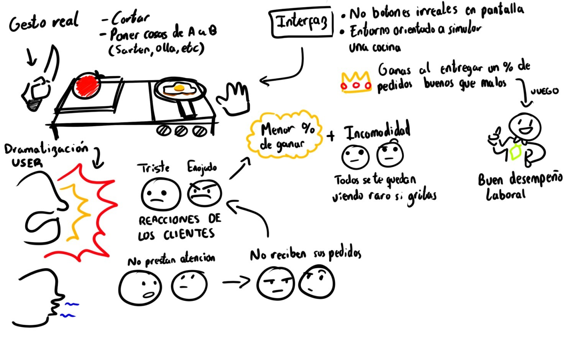

Proceso de Desarrollo
Del concepto inicial a la implementación final
📝 Sketching/Storyboarding
Se crearon bocetos para visualizar las mecánicas de preparación de hamburguesas, incluyendo la selección de ingredientes, el sistema de pedidos y la gestión del tiempo. Se exploraron distintos diseños para la interfaz de usuario, asegurando que todos los elementos sean claramente visibles (principio de Visibilidad) y que los controles sean intuitivos (Affordances).
🎨 Maqueta
Se desarrolló un prototipo jugable que permitió realizar evaluaciones con usuarios, recopilando retroalimentación valiosa sobre la experiencia de juego. Los participantes probaron las mecánicas de preparación de hamburguesas, evaluaron la claridad de los ingredientes disponibles y validaron el sistema de feedback visual con los estados de los clientes.


🎮 Primera Fase Videojuego
En la Primera Versión, se identificaron varios problemas que afectaban la experiencia del usuario. A través del feedback de los jugadores, se implementaron soluciones que mejoraron significativamente la jugabilidad y el cumplimiento de los principios de diseño de interacción.
Espacio reservado para primera fase
Aquí irán capturas de la primera fase del juego
🎥 Pruebas con Usuarios
Se realizaron sesiones de evaluación con usuarios reales para identificar problemas de usabilidad y recopilar feedback sobre la experiencia de juego.
Espacio reservado para capturas de pruebas
Aquí irán capturas de pantalla de las sesiones de prueba
Análisis de Usabilidad
❌ Problemas Identificados
- Los jugadores no lograban ver el tiempo restante para completar pedidos
- Los botones de ingredientes no estaban claramente implementados
- Distribución confusa - usuarios pensaban que debían cocinar en lugar de ensamblar
- Visibilidad insuficiente de los iconos de colores de ingredientes
- Animaciones de los clientes eran estáticas y no reflejaban su estado
- No se mostraban puntuaciones o propinas al completar pedidos
- Algunos elementos como las bandejas no eran visibles para los jugadores
✅ Soluciones Implementadas
- Visibilidad: Se añadió temporizador grande y visible en pantalla
- Affordances: Botones de ingredientes rediseñados para parecer claramente clicables
- Restricciones: Redistribución de elementos para evitar confusión sobre las acciones disponibles
- Feedback: Iconos de colores mejorados con mayor contraste
- Consistencia: Animaciones dinámicas de clientes que reflejan su estado emocional
- Feedback Visual: Sistema de puntuación visible con +100, +50, +10 puntos
- Mejora de visibilidad de bandejas y elementos interactivos
Espacio reservado para comparación antes/después
Aquí irán capturas comparativas del antes y después de las mejoras